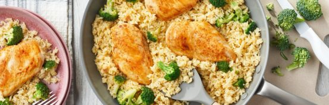

Protein Chicken and Rice

Delicious and high protein rice and chicken
Ingredients
- 1 1/4 pounds pounds boneless, skinless chicken breast (4 small or 2 large cut in half lengthwise for thinner pieces)
- 1 tablespoon tablespoon vegetable oil
- 1 can (10 1/2 ounces) Campbell’s® Condensed Cream of Chicken Soup or 98% Fat Free Cream of Chicken Soup or Unsalted Cream of Chicken Soup
- 1 1/2 cups water
- 1/4 garlic powder
- 2 cups teaspoonpaprika
- 2 cups uncooked instant white rice (for creamier rice, decrease to 1 1/2 cups)
Instructions
- Season the chicken with salt and pepper. Heat the oil in a 12-inch skillet over medium-high heat. Add the chicken and cook for 6 minutes or until browned on both sides (to prevent sticking- make sure the skillet and oil are hot before adding the chicken). Remove the chicken from the skillet.
- Stir the soup, water and paprika in the skillet and heat to a boil. Stir in the rice and broccoli. Reduce the heat to low. Return the chicken to the skillet. Sprinkle the chicken with additional paprika. Cover and cook for 5 minutes or until the chicken is done and the rice is tender. Season to taste before serving.